С днем рождения, милая
Злата, моя любимая, поздравляю тебя с этим светлым днём, с днём рождения моей самой любимой девушки, с днём, когда родился тот человек, который изменит всю мою жизнь.
Конечно нужно отметить то, что ты стала совершеннолетней, стала взрослой. Теперь ты с гордостью можешь покупать себе алкоголь и сигареты, что, надеюсь, никогда не произойдёт.
Любимая, я могу пожелать тебе в отношениях лишь понимания с твоей мамой, которая столько сделала для тебя, пожелать тебе быть ближе с братом. Малыш, желаю тебе всегда оставаться такой по-особенному красивой, такой харизматичной, такой обворожительной и шикарной, сногсшибательной, и несмотря на все это оставаться в моментах настолько милой, насколько можешь только ты одна. Всегда оставаться такой заботливой девушкой, милой, доброй. Хочется пожелать тебе быть жизнерадостнее, мечтательной. Конечно же желаю тебе здоровья крепкого, чтобы ты так и продолжила всю жизнь обходиться без врачей, и чтобы мы прожили как можно дольше вместе!
А остальное я не буду желать, а просто буду делать для тебя! Любимая, я всю свою жизнь посвячу тебе одной, буду жить для тебя и ради тебя. Всю свою жизнь буду делать всё для твоего счастья, радости, спокойствия, удовольствия, уверенности. Буду с тобой в самые счастливые и самые тяжёлые времена. Я полюблю всё, что любишь ты. Буду рядом всю свою жизнь. Я отдам тебе всю свою бесконечную любовь! Ты никогда не узнаешь, что такое потерять любовь, не узнаешь, что такое предательство любимого человека.
Я так сильно люблю тебя, малыш!
Наше знакомство
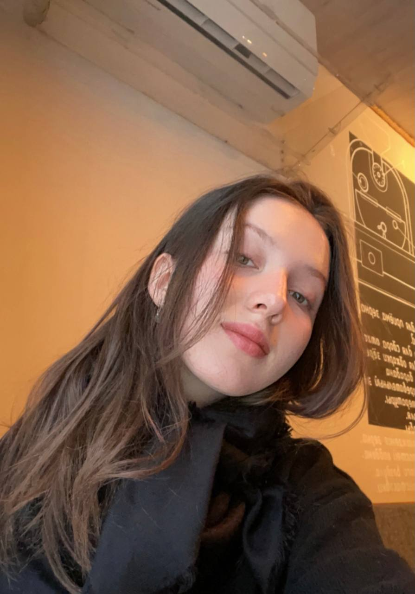Я влюбился в общение с тобой с самого первого дня. Уже тогда я понял, что ты особенная девушка, каких в наше время осталось единицы. С тех самых пор я без устали отдаюсь в общении с тобой полностью и жду, когда я смогу провести с тобой хотя бы пару минуточек. Я обожаю твою улыбку! Ты невероятная девушка, Злата, ты самая лучшая на свете. Я думаю, что еще много раз это скажу.
Первая встреча с самой любимой девушкой
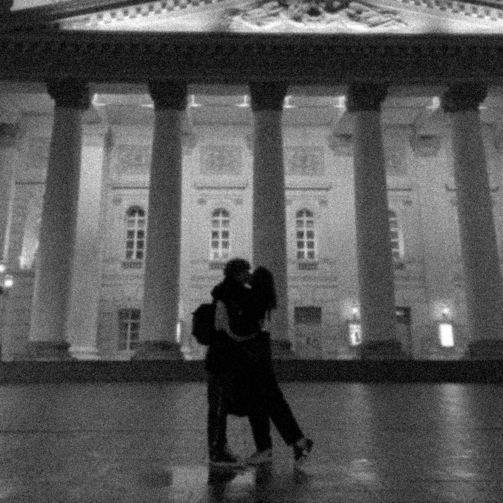Уже летом, когда заходили разговоры о твоём поступлении в Москву, я знал, что приеду к тебе. Я ждал этого очень очень сильно! Я мечтал обнять тебя и поцеловать, взять тебя за руку, мечтал провести с тобой время. Перед поездкой я так волновался… но ждал с замиранием сердца. Когда я утром поехал на встречу с тобой, я понял, что нахожу в незнакомом месте без интернета и связи, но я знал, что я готов сделать всё, чтобы не опоздать и встретить тебя! Сначала я встретил твою маму, но издалека подумал, что это ты, немного заволновался. Потом, когда мама подошла поближе, она сказала, чтобы я сделал вид, что мы не виделись с ней, потому что ты волнуешься, любимая. Так было тепло на душе, когда подходило осознание того, что вот-вот я встречу тебя. И вот шла ты, красивая такая. Я, когда увидел тебя издалека, утонул от твоей красоты. Чем ближе ты была, тем сильнее билось мое сердце. Ты подбежала ко мне, крепко обняла меня и поцеловала в щечку, от чего я, человек не знавший такой любви, просто растаял! Мы с тобой мило гуляли за ручку, обнимались и целовались, что делало меня самым счастливым на свете. Я бы проводил так время просто бесконечно. Потом мы пошли пить чай в милое и атмосферное место, где я сказал тебе то, что хотел сказать так давно: "я люблю тебя, Злата". Это была так волнительно говорить, но я должен был это сделать! Я обожал каждую секунду, проведённую с тобой, ценил, как зеницу око. Мы с тобой провели несколько милых и замечательных дней. Сходили в кино, где так страстно целовались, гуляли вечером под дождиком, любили друг друга. Прощаться было тяжело, но с ожиданием будущего. Я был самым счастливым на все свете, Злата. Только благодаря тебе одной! Бесконечно сильно люблю тебя!
Наше NFT, нарисованное моей любимой художницей
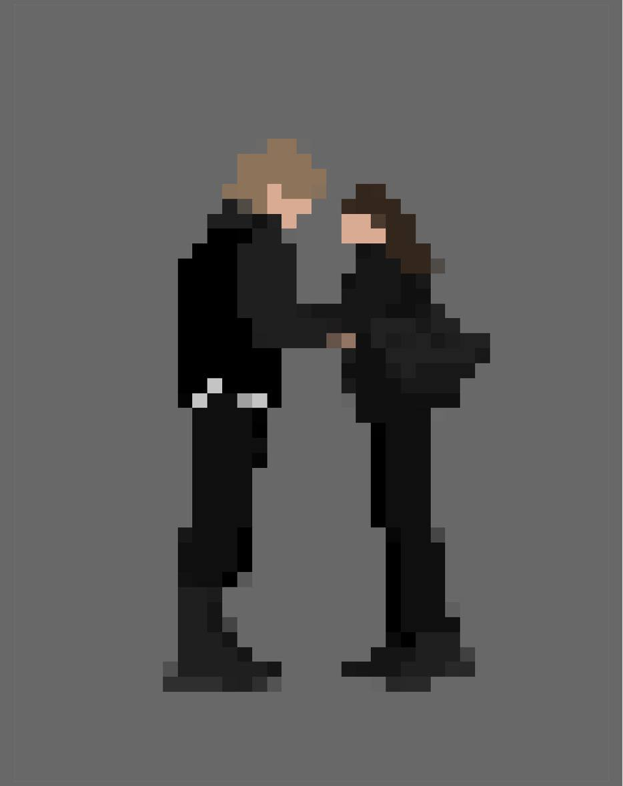Моя самая любимая картиночка от самой любимой девушки! До сих пор стоит у меня на заставке браузера!
Обожаю!
Наша вторая, и пока крайняя, встреча
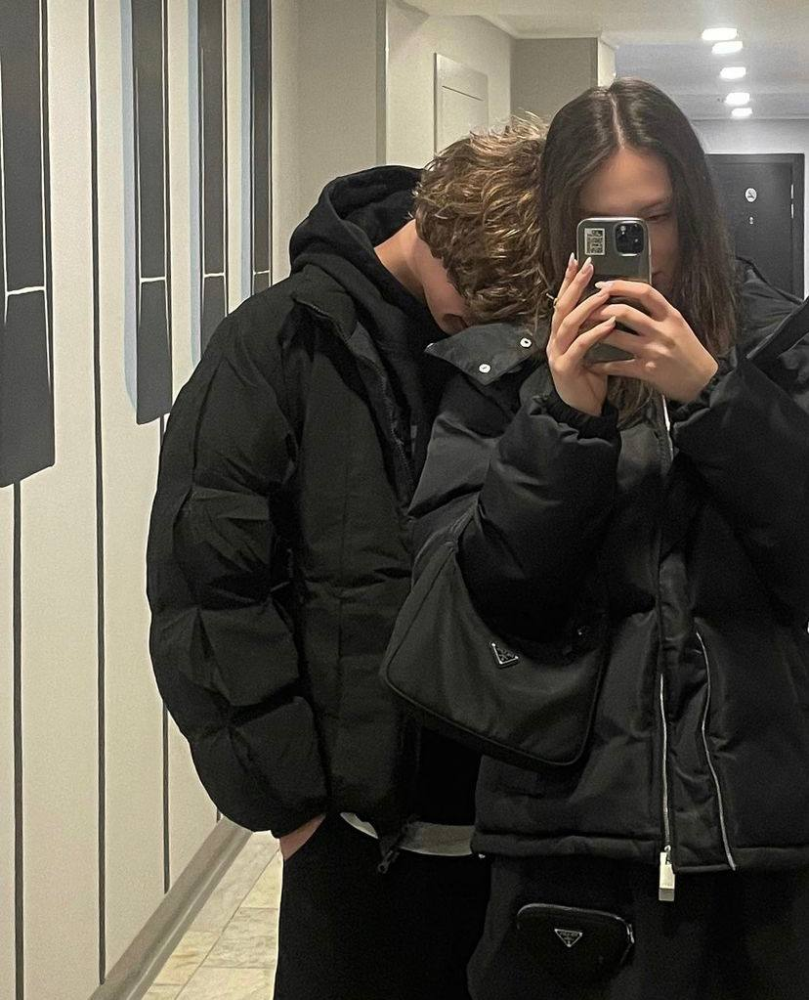Вторую встречу нашу я ждал с ещё большим энтузиазмом. Я знал, что стану ради тебя ещё смелее, знал, что хочу делать тебе приятно, как только ты пожелаешь! Я так был счастлив, что мы сможем ещё больше времени проводить вместе, проводить его наедине. Когда я ехал в такси к тебе, моему счастью не было предела. Я держал в голове только одно: "я сейчас встречу лучшую девушку этого мира". Так приятно было вновь увидеть тебя, так радостно. А когда мы пришли и ты подарила мне подарок, я вообще был на седьмом небе от счастья. Ты самая первая девушка в моей жизни, кто мне так захотел сделать милый и классный подарок. Я обожаю твоё колечко и ношу его не снимая! Еще, помимо особенно близости с тобой, мне так приятно было кушать с тобой роллы и смотреть аниме. Я каждый день хотел бы так с тобой вечером сидеть. Это такие тёплые чувства, когда ты лежишь и обнимаешь ту самую, смотришь аниме и кушаю что-то вкусненькое. Мне снова так хочется повторить всё это. Мне было безумно приятно проводит с тобой время.
Попытка описания твоей по-настоящему неописуемой красоты!
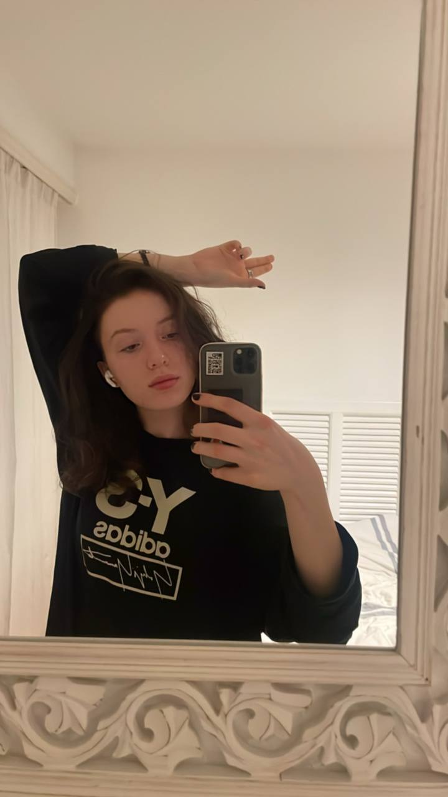Злата, твоя красота всегда занимала особенное место в отношении тебя. Конечно она никогда не выйдет на один уровень с твоей личностью, но мы не об этом! Когда я увидел тебя на фотках в самый первый раз, я влюбился сразу же. Я просто не мог не смотреть на тебя. Ты настолько завораживаешь взгляд, так сильно западает в душу твоя красота. Ты выглядишь настолько по-особенному красиво, что нет даже сомнений о твоей уникальности. Часто очень люди выглядят красиво, но похоже на кого-то. А у тебя именно так, что ты так красива и уникальна, что твой образ невозможно забыть. Я с первого дня и до сегодняшнего восхищаюсь твоей красотой. Твои глаза сравнимы с космосом. Их можно разглядывать бесконечно. А твой взгляд… он просто сносит крышу. Настолько красивый, холодный и спокойный, уверенный. Я его обожаю! Мне нравится в тебе абсолютно всё. Ты мой идеал на всю жизнь, Злата. Не могу не упомянуть и твою шикарную фигуру. Твои длинные, красивые и стройные ножки, твои худенькие ручки, с тоненькими пальчиками, твоя безумно красивая талия с животиком, твоя нежная грудь, твоя красивая и сочная попа. Всё в тебе идеально, просто всё! Обожаю!
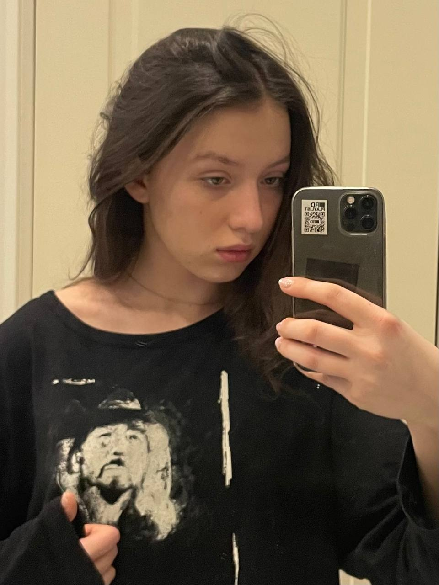 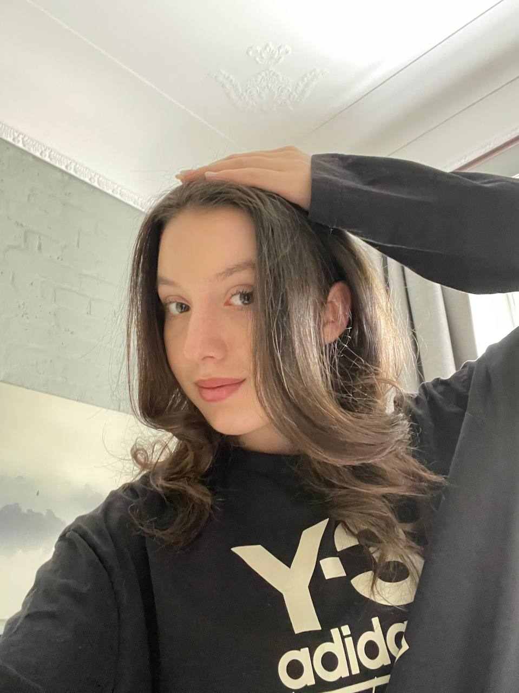Твой стиль
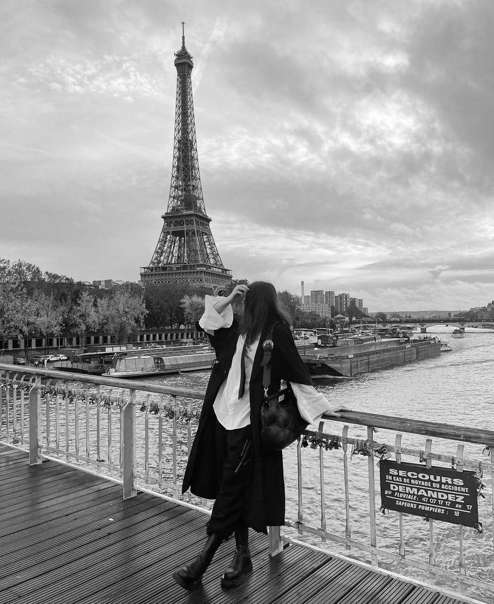Вся наша с тобой история и начался, по сути, с твоего стиля. Я считаю похвальным, что ты не просто интересуешься таким стилем, а ещё и имеешь смелость покупать вещи такие! Потому что многое смотрят, но боятся носить то, что им нравится. Мне конечно хочется в глубине души, чтобы мы с тобой похоже одевались и были милой парочкой, но то, как ты одеваешься… на это можно смотреть вечно. Если бы ты раскручивала свою инсту, то я уверен, что у тебя уже было и 50 тысяч, и ещё больше подписчиков. На одеваешься на равне, и даже лучше многих "инфлюенсеров". Я восхищаюсь тобой и твоим стилем. Он идеально подчеркивает твою красивую фигуру и скрывает то, что не должен видеть никто, кроме меня :3 Обожаю тебя, Злата!
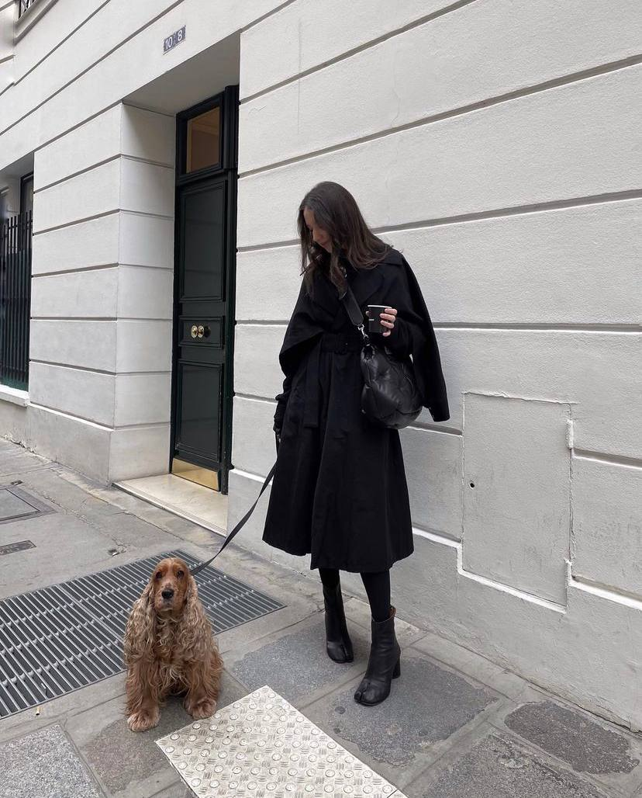 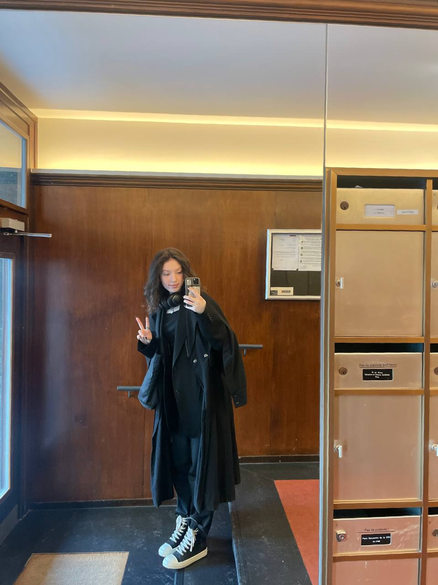Мое отношение к тебе
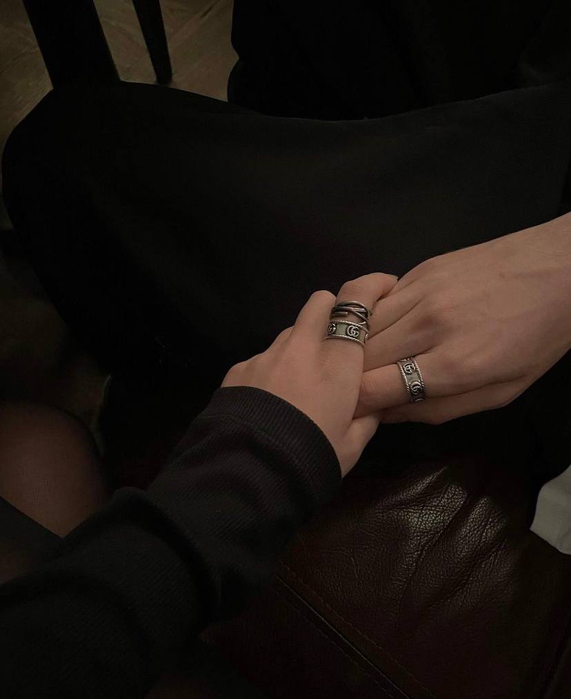Коротко о тебе За этот небольшой, но все равно солидный, период времени ты стала для меня не то что заменой всех людей на планете, но ты стала для меня самым родным, близким и особенным человеком. Стала первым человеком, который так быстро и кардинально изменил моё мышление и отношение к жизни. Ты бесспорно являешься моим самым любимым человеком, самой лучшей и любимой девушкой, моей единственной, идеальной и незаменимой. Ты мой самый светлый лучик, освещающий всю мою серую жизнь. Моя прекрасная яркая путеводная звездочка жизни. Ты моя единственная на всю жизнь, Злата!